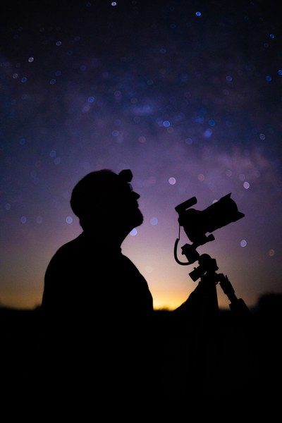

You spent hours under the sky and shot hundreds of frames. Then an airplane or satellite sliced right through them. Star Trail CleanR finds and erases those streaks automatically, frame by frame, before you stack, so the stars are all that's left.
Real runs shared by photographers, before and after Star Trail CleanR erased the airplane and satellite streaks. Drag the handle to swipe between them, and use the arrows to see more.
Choose the sequence of frames on your drive. We can process RAW, TIFF, or JPEG images.
An AI detector trained on real airplane and satellite trails marks them in every frame, while leaving the stars and your foreground untouched.
The cleaned frames drop into your stacker as usual. An optional before/after clip and a timelapse come out the other side.
Always the latest beta. First-launch tips are included for macOS Gatekeeper and Windows SmartScreen.
Each frame is run through an AI YOLO segmentation model trained on thousands of manually labeled airplane and satellite trails across many cameras, lenses, and sky conditions. The model traces a mask over the trails it finds before we apply the repair.
For each trail, Star Trail CleanR looks at the frames just before and after, picks the neighbor whose sky best matches, and shifts it so the stars line up exactly with the frame being repaired. Every borrowed pixel is color-corrected to the local sky before it is laid over the trail, so the real stars underneath come back at full brightness and the repair blends invisibly, even against twilight gradients or a glowing horizon. We call this technique Star Bridge. No smudges, no blank patches.
Star Trail CleanR is a free tool built by Bruce Herwig to solve a problem every star-trail shooter hits. It keeps getting better with feedback and shared frames from the community.

Lincoln Harrison, whose all-night star trail images changed the way I think about this art form. Before discovering his work, I thought 30 minutes to an hour was enough for a star trail. Lincoln's commitment to shooting through the entire night, and the breathtaking results that follow, inspired me to do the same.
Markus Enzweiler, creator of StarStaX, the stacking software I have relied on for over a decade. StarStaX is the definition of software done right: simple, reliable, and free to the community with both Mac and PC versions. It just works. Star Trail CleanR is built to hand off directly to StarStaX: clean your frames first, stack with StarStaX, and edit to taste.
Silvana Della Camera, for her inspiring timelapse work and for helping test Star Trail CleanR on the PC. Silvana's approach to the night sky opened my eyes to a question I hadn't considered: why shoot for one image when your frames give you three? A single night session with Star Trail CleanR can produce a cleaned star trail stack, a timelapse, and a single long-exposure equivalent. Three finished images from one night's work.
Additional acknowledgments: Austin Werk for being a great sounding board and cheerleader in helping me learn coding with AI. Royce Bair, Alyn Wallace (gone before his time), and so many others for their generous contributions to the astro community.
gkyle, whose open-source StarTrails AI project and publicly shared training dataset helped jump-start Star Trail CleanR's detection model.
Star trail sequences used for AI training, generously provided by: Ajay Talwar, Cheryl Wilcox, Greg Meyer, Jeff Fishman, Jon Bertsch, Kajan Gnanasakthy, Katrina Brown, Sean Parker, Silvana Della Camera, Shiu Wan, Thomas Jackson, and Warren Hatch.